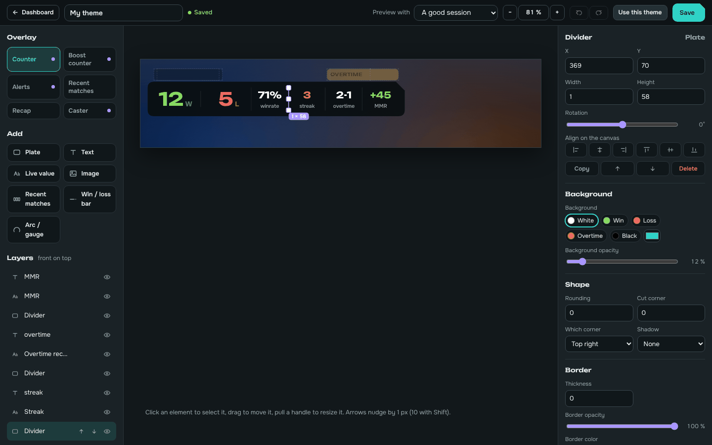
Theme editor
Place plates, texts, live values and images with the mouse and watch the result. Counter, Boost counter, alerts, recent matches, recap and caster overlay, without touching a file.
RL-UI counts every win, loss and overtime on its own, reads your real MMR and puts it all in OBS or Streamlabs, with alerts for the big moments and a look you draw yourself.
Free. Windows 10 or 11, Rocket League on Steam or Epic. No mods, safe with the anti-cheat.
Version 2 rebuilds the app around four additions.

Place plates, texts, live values and images with the mouse and watch the result. Counter, Boost counter, alerts, recent matches, recap and caster overlay, without touching a file.
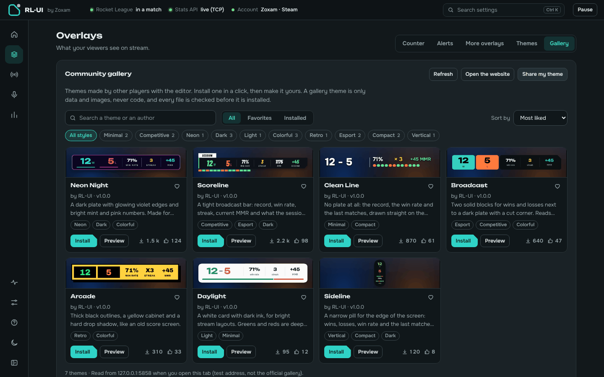
Themes made by other players, installed in one click and kept up to date. Publish yours on kydora.net/marketplace.
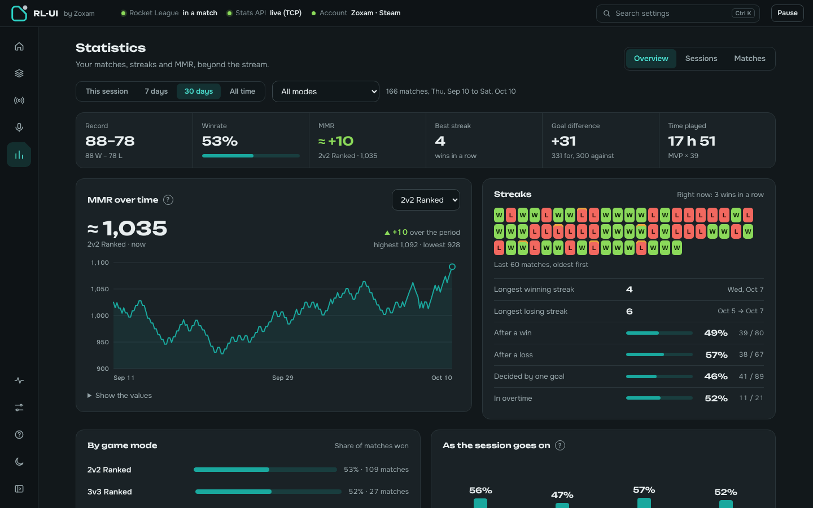
MMR curve, streaks, win rate by game mode, sessions compared with each other, a session summary to share as an image, CSV export.
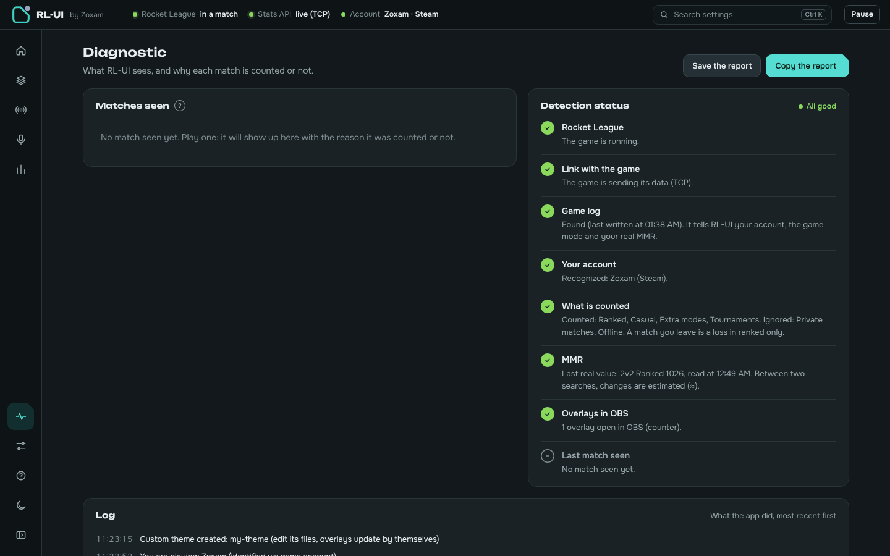
Every match RL-UI saw, with the reason it was counted or not, and a button to count it anyway. A report to copy when you need help.
RL-UI listens to Rocket League's official Stats API and the game's log file. Nothing to click between matches.
W, L and OT detected automatically, plus forfeits, early leaves, MVP and the playlist (2v2 ranked, 3v3…).
Read from the game itself and shown as +9 or −12 after each match, per playlist.
Victory, defeat, overtime, overtime won or lost and win streaks, with sounds you can replace by your own.
Horizontal, vertical, or snapped to the in-game boost gauge in your team's color.
Connect OBS once, then every overlay is one button away. Or drag the button into the OBS window.
!wl, !mmr, !last, !streak answered in your chat with live numbers, plus your own commands.
Switch scenes or show sources on overtime and wins, fix the count from a Stream Deck or a hotkey.
The app follows your system theme, updates itself in the background and speaks both languages.
Browser sources for OBS Studio and Streamlabs Desktop. They follow your settings live, without reloading.
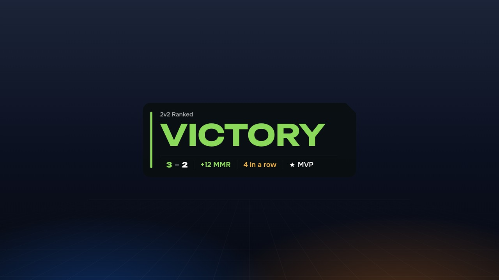
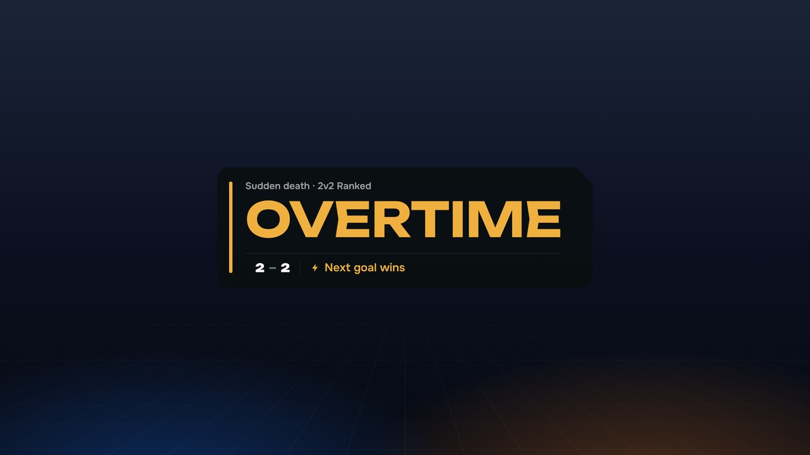

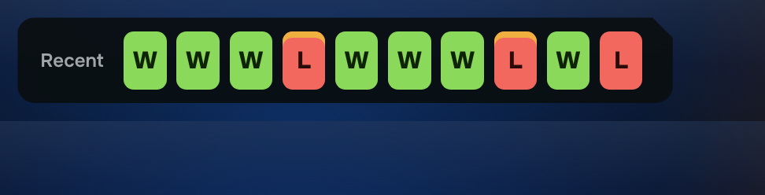


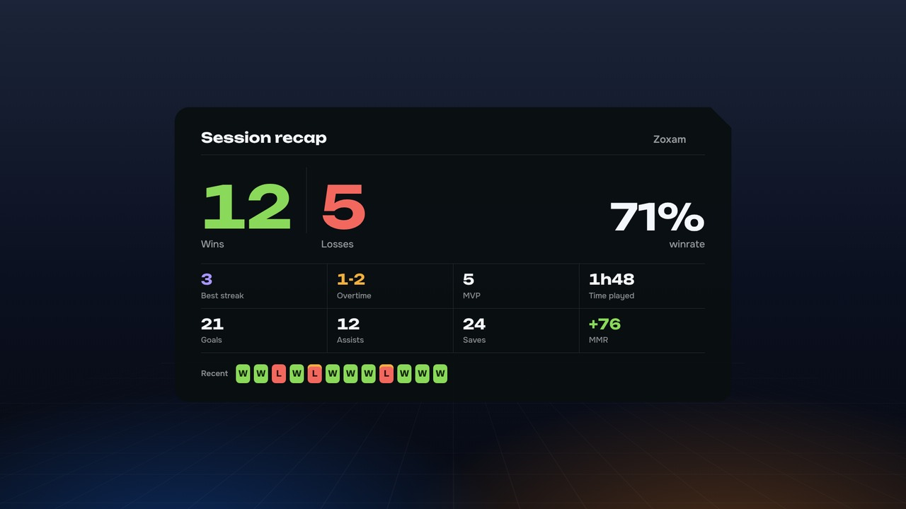
Pick a built-in theme, install one from the gallery, or draw every overlay yourself. A theme made in the editor is data and images only, never code: installing someone else's theme cannot run anything on your PC.
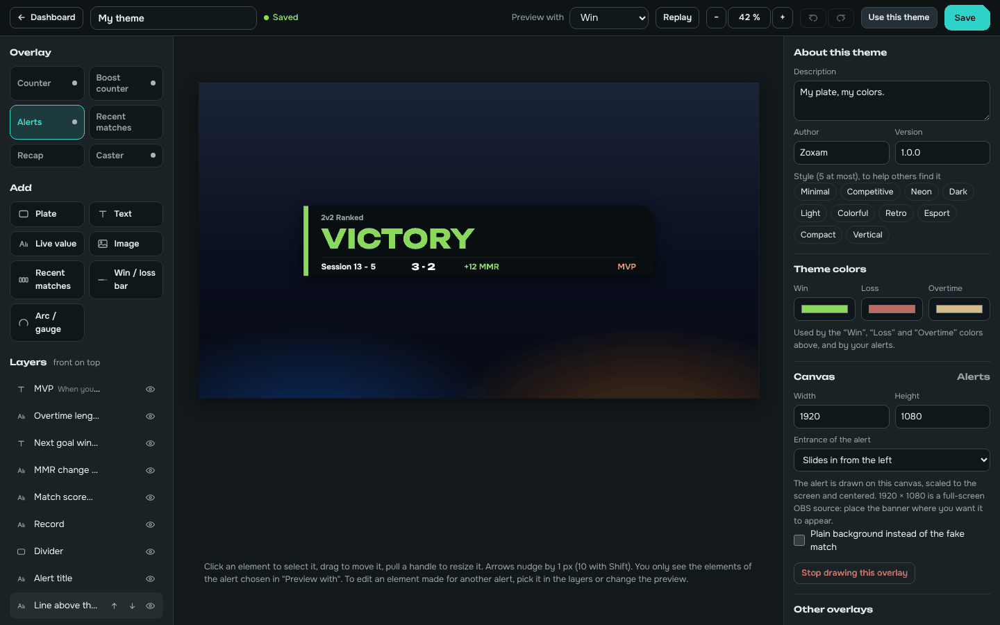
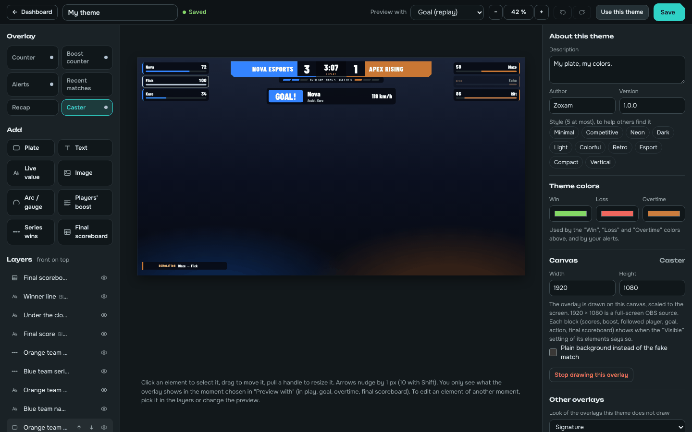
Casting a tournament or a scrim as a spectator? RL-UI gives you a full broadcast overlay: scorebug, Bo3/Bo5/Bo7 series counted automatically, every player's boost, goal banner, statfeed and the end-of-match scoreboard.
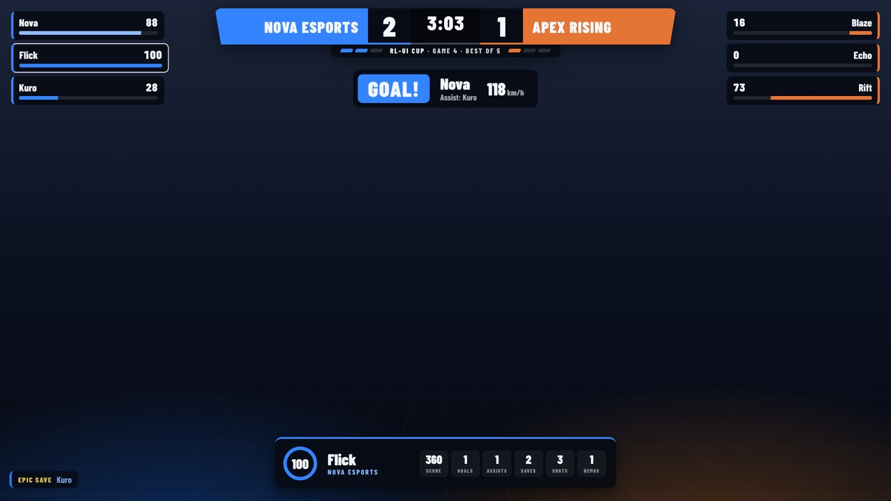
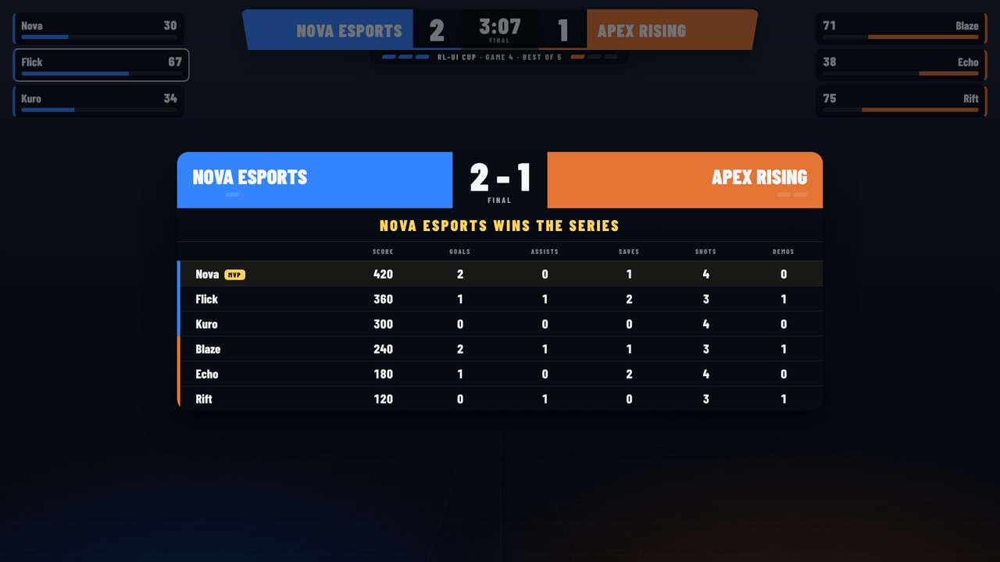
About two minutes. A guided setup opens on first launch.
RL-UI-Setup from the latest release, or take the portable version.127.0.0.1:5757/overlay/counter.No mod and no injection: RL-UI only reads the Stats API that Psyonix built into the game for overlays, and the game's local log file. It is compatible with Easy Anti-Cheat.
The .exe isn't code-signed yet, so SmartScreen may warn on first launch. Click More info, then Run anyway. The source code is on GitHub.
Yes, both. Your account is recognized from the game log, in solo, duos and trios.
From Rocket League's own log on your PC. Right after a match RL-UI shows an estimate, then corrects it with the real value as soon as the game reports it.
A theme made in the editor holds only data and images, no CSS and no script. RL-UI checks every file of a gallery theme (size, fingerprint, format) before installing it.
Your matches and statistics never leave your PC. RL-UI only goes online for what you see: the update check on GitHub, the Twitch chat if you connect it, and the theme gallery when you open it. Passwords are encrypted with Windows data protection.
Yes.